Teste tes connaissances sur l’impact environnemental des IA.
1. Combien de CO₂ est émis lors de l’entraînement d’un modèle comme GPT-4.5 ?
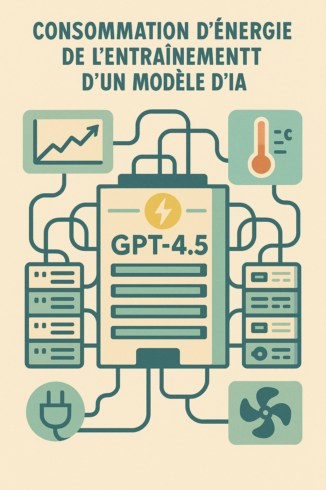
A) 50 kg – équivalent d’un aller simple Toulouse–Paris.
B) 50 tonnes – équivalent de 10 tours du monde en voiture.
C) 15 000 tonnes – équivalent d’un aller-retour Toulouse–Mars (Falcon 9).
D) 5 000 tonnes – équivalent de 100 vols Toulouse–Tokyo.
2. Quelle est la consommation carbone mondiale liée aux LLM par jour ?
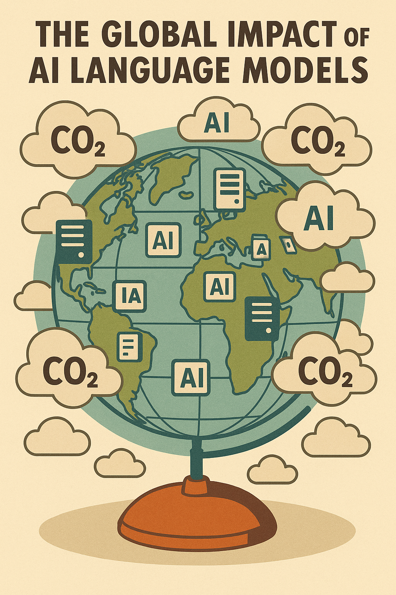
A) 640 t – équivalent d’un lancement Falcon 9.
B) 1 920 t – équivalent d’un Falcon Heavy vers Mars.
C) 4 300 t – équivalent de 7 lancements Falcon 9.
D) 76 000 t – équivalent d’une expédition Starship vers la Lune.
3. Combien de CO₂ génère une requête type ChatGPT pour écrire un texte ?
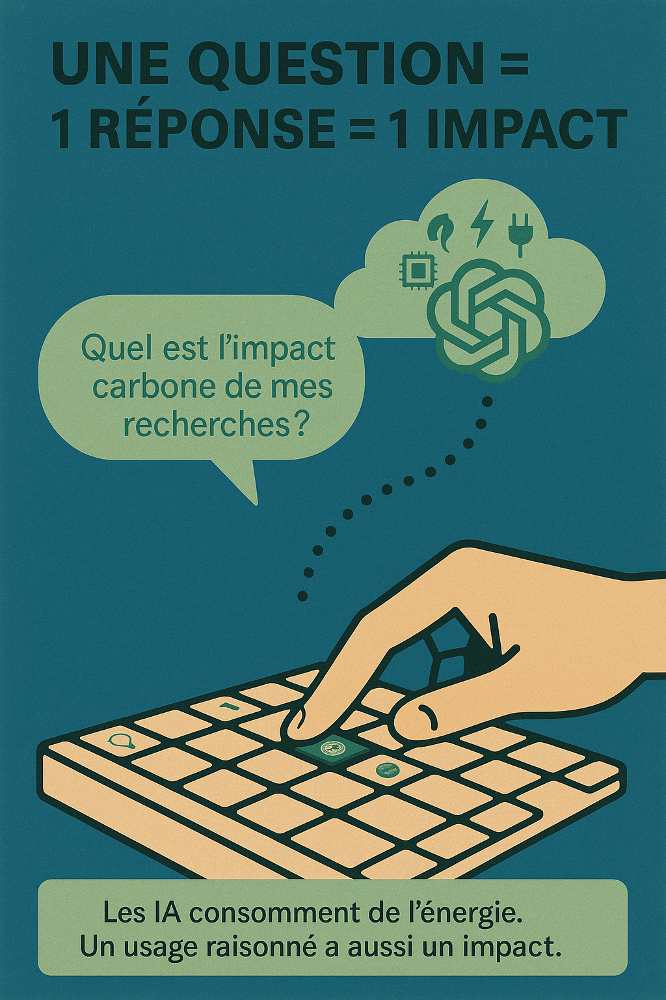
A) 0,1 g – équivalent de 2 s de streaming HD.
B) 1 g – équivalent de 20 s de streaming HD.
C) 4 g – équivalent de 1 min 20 de streaming HD.
D) 10 g – équivalent de 3 min 20 de streaming HD.
4. Créer une image via IA (DALL·E, Midjourney), ça émet combien de CO₂ ?
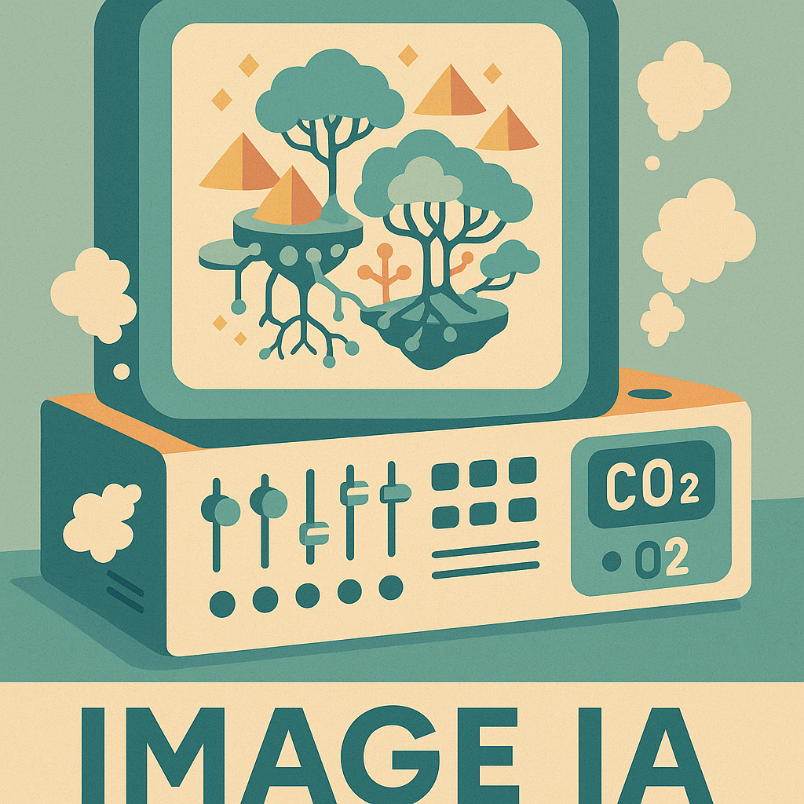
A) 1 g – équivalent de 20 s de streaming HD.
B) 2 g – équivalent de 3 min de streaming HD.
C) 10 g – équivalent de 15 min de streaming HD.
D) 50 g – équivalent de 1 h de streaming HD.
5. Produire une vidéo courte avec IA génère combien de CO₂ ?
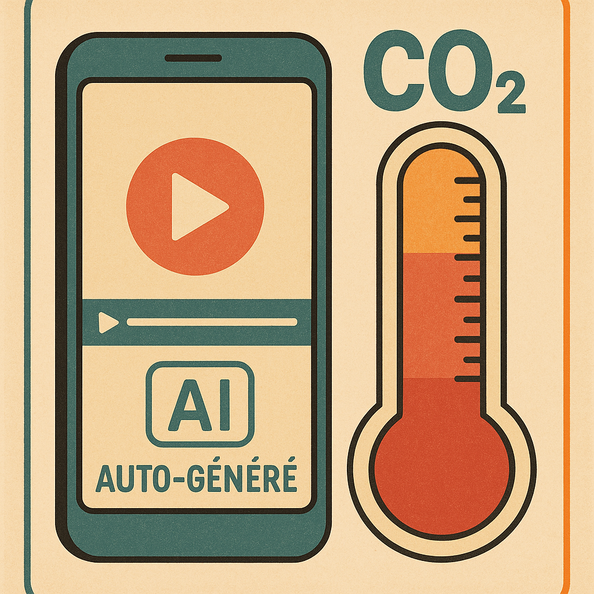
A) 10 g – équivalent de 30 min de jeu vidéo en ligne.
B) 100 g – équivalent de 5 h de jeu vidéo en ligne.
C) 300 g – équivalent de 15 h de jeu vidéo en ligne.
D) 1 000 g – équivalent de 50 h de jeu vidéo en ligne.
6. Quel volume de CO₂ émis chaque jour via tous les prompts IA ?
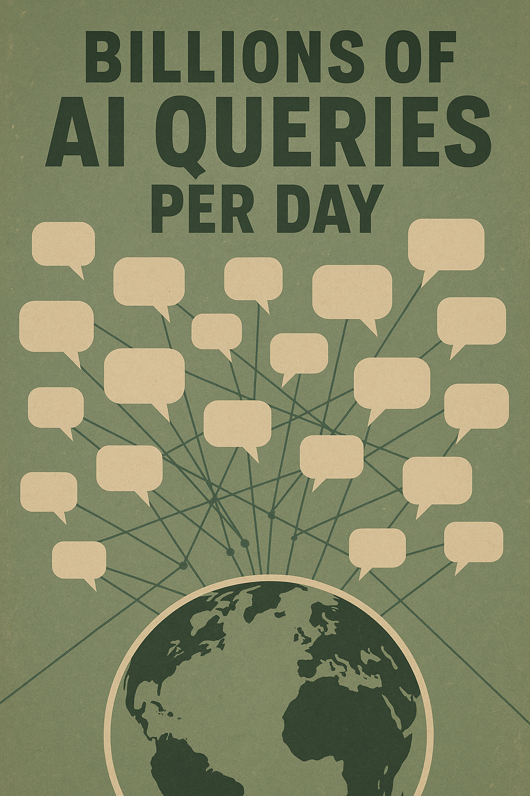
A) 100 t – équivalent incinération de 5 000 000 sacs plastiques.
B) 1 000 t – équivalent incinération de 50 000 000 sacs plastiques.
C) 9 000 t – équivalent combustion de 3 000 t de charbon.
D) 50 000 t – équivalent combustion de 16 500 t de charbon.
7. Impact carbone moyen usage recommandations (par jour) ?
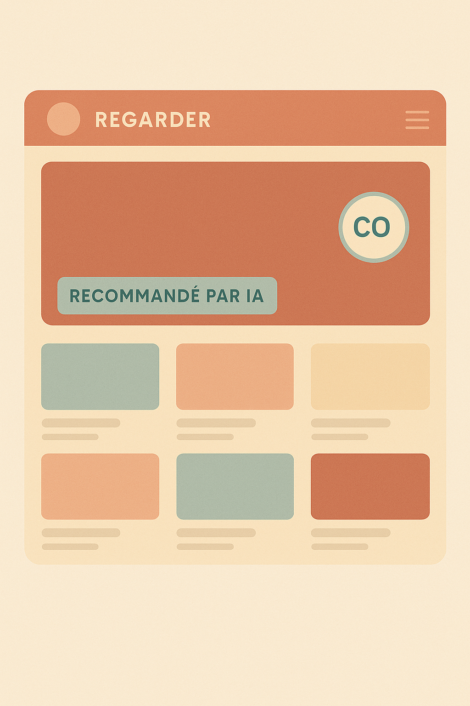
A) 20 t – équivalent 3 tours du monde en avion.
B) 80 t – équivalent 10 tours du monde en avion.
C) 200 t – équivalent 25 tours du monde en avion.
D) 400 t – équivalent 50 tours du monde en avion.
8. Activation fonctions IA en visioconférence augmente émissions de combien ?
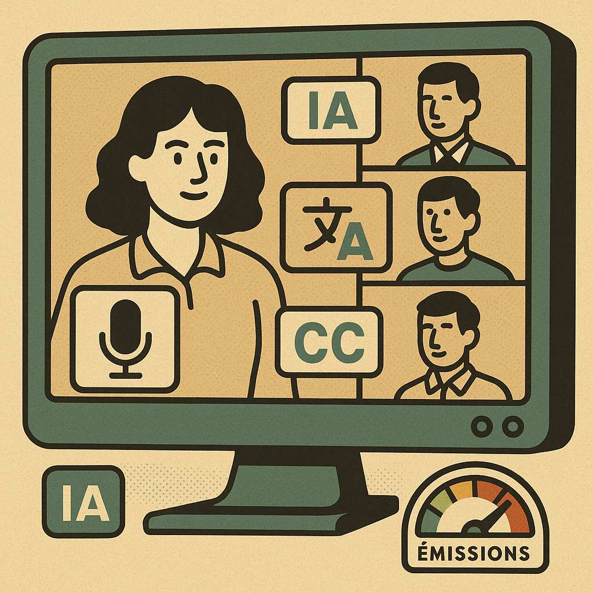
A) 2 g – équivalent envoi de 10 e-mails.
B) 10 g – équivalent envoi de 50 e-mails.
C) 20 g – équivalent envoi de 100 e-mails.
D) 50 g – équivalent envoi de 250 e-mails.
9. Reconnaissance faciale émet combien de CO₂ par détection ?
A) 0,2 g – équivalent 20 m en métro.
B) 1 g – équivalent 100 m en métro.
C) 5 g – équivalent 500 m en métro.
D) 10 g – équivalent 1 km en métro.
10. Consommation quotidienne CO₂ d’un robot humanoïde actif ?
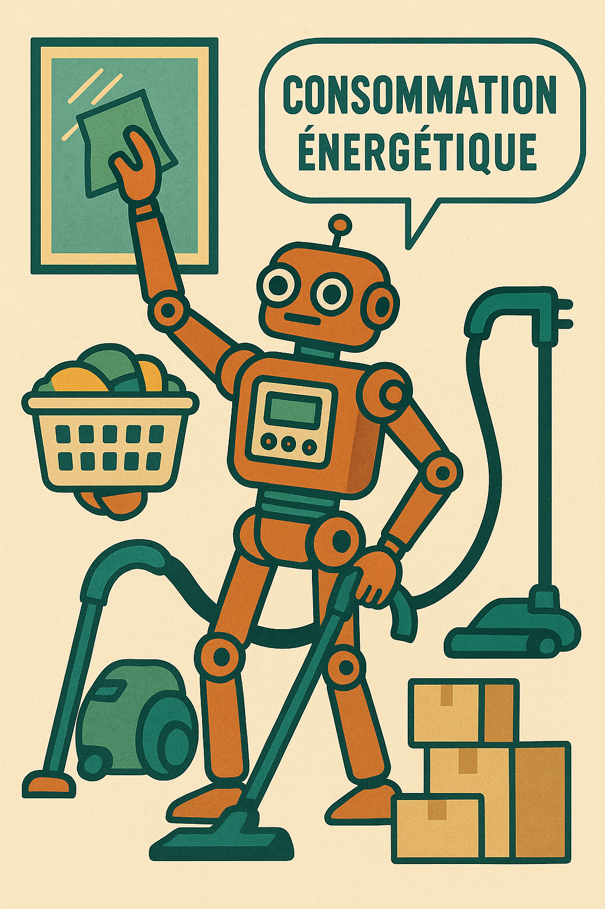
A) 1 kg – équivalent 5 km en voiture (Toulouse–Université).
B) 5 kg – équivalent 25 km en voiture (Toulouse–Muret).
C) 10 kg – équivalent 50 km en voiture (Toulouse–Montauban).
D) 50 kg – équivalent 250 km en voiture (Toulouse–Bordeaux).
11. Combien d’élèves utilisent l’IA pour apprendre dans leur langue ?
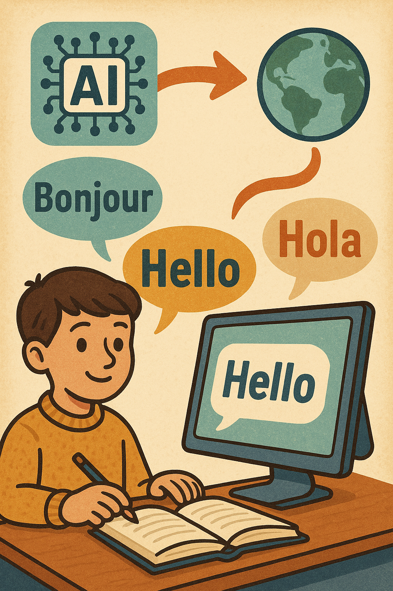
A) 5 millions – équivalent 8 300 h de cours humains.
B) 50 millions – équivalent 83 000 h de cours humains.
C) 300 millions – équivalent 500 000 h de cours humains.
D) 1 milliard – équivalent 1,6 million h de cours humains.
12. Combien de cancers détectés précocement grâce à l’IA ?
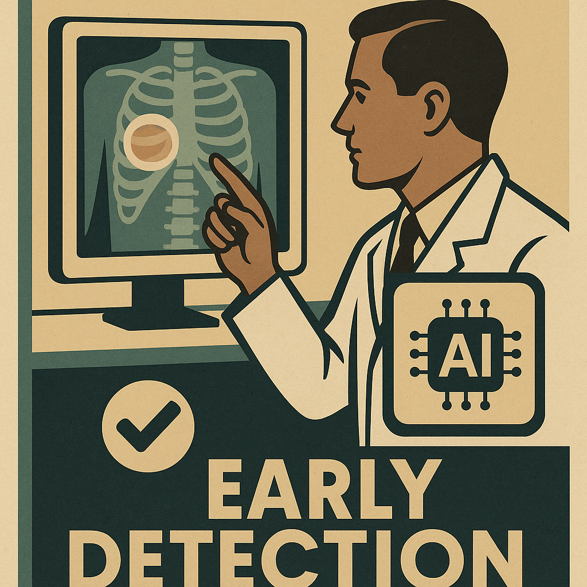
A) 1 000 – dont ~150 vies sauvées.
B) 10 000 – dont ~1 500 vies épargnées.
C) 50 000 – dont ~7 000 personnes soignées à temps.
D) 100 000 – dont ~14 000 patients évités diagnostic tardif.